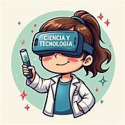

Beneficios de la Educación y la Tecnología
5 principales ventajas de las TIC en educación
Las Tecnologías de la Información y la Comunicación (TIC) están transformando el ecosistema educativo y aportan grandes ventajas para todos los participantes en el proceso de enseñanza-aprendizaje
Facilitan la comprensión
El uso de herramientas tecnológicas motiva a los estudiantes y hace que mantengan la atención más fácilmente, por lo que los contenidos se asimilan con mayor rapidez. También ayudan a mejorar la integración de personas con discapacidad
Fomentan la alfabetización digital y audiovisual
Los alumnos adquieren las competencias digitales y audiovisuales necesarias para su futuro profesional, aprendiendo a utilizar diferentes herramientas y software, a buscar y evaluar información, y a comunicarse efectivamente en entornos virtuales.
Aumentan la autonomía del estudiante
as TIC ayudan a las personas a ser más autosuficientes y resolutivas, permitiendo que los estudiantes aprendan a su propio ritmo y desarrollen habilidades de aprendizaje independiente
Enseñan a trabajar y colaborar en equipo
La tecnología genera interacción entre los alumnos y favorece el trabajo en equipo. Las herramientas interactivas, juegos educativos y plataformas de colaboración en línea fomentan la interacción, creatividad y conexión entre estudiantes
Ayudan a desarrollar mayor pensamiento crítico
Internet y las redes sociales abren al alumnado a un gran número de puntos de vista, enseñando a debatir y aceptar opiniones ajenas. Ofrecen posibilidades para intercambiar ideas con personas de otros países, poniendo al alumno en contacto con culturas diferentes